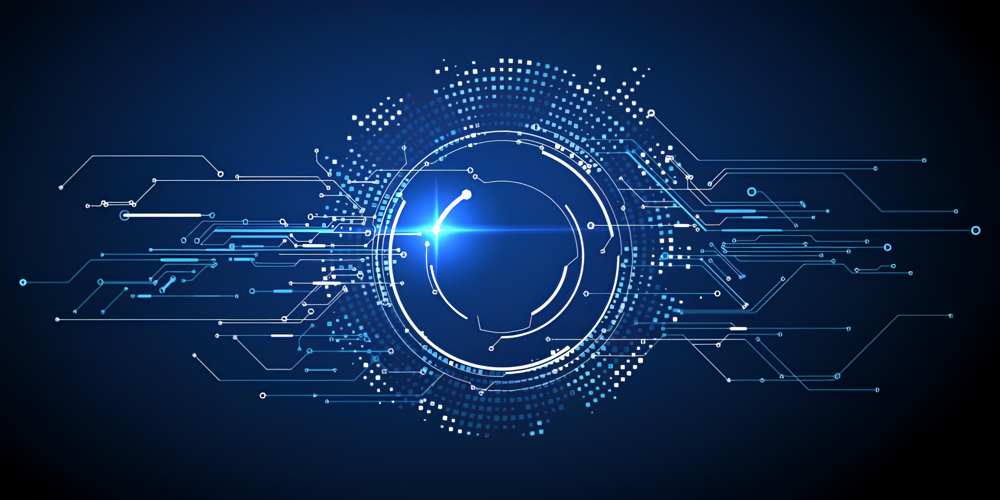

Introduction to IT
Information Technology (IT) encompasses all aspects of managing and processing information using computers and software. It has become an integral part of modern life, business, education, science, and entertainment. IT includes software development, database management, network technologies, cybersecurity, artificial intelligence, and much more. The impact of IT is enormous, and it continues to grow, bringing both significant advantages and certain challenges.
Advantages and Disadvantages of Information Technologies
- Increased efficiency and productivity: Automation of routine tasks, acceleration of data processing and decision-making processes.
- Global access to information and knowledge: The Internet provides unlimited access to educational resources, scientific research, and news from around the world.
- Improved communications: Email, messengers, social networks, and video conferencing provide instant communication regardless of geographical location.
- Innovation and development: IT is a driving force for creating new products, services, and business models, contributing to economic growth.
- Improved quality of life: Medical technologies, smart homes, and online services make life more convenient and safer.
- Optimization of business processes: Enterprise Resource Planning (ERP) systems, Customer Relationship Management (CRM) systems, and other tools help companies operate more efficiently.
- Opportunities for remote work and learning: IT allows people to work and learn from anywhere in the world with internet access.
- Cybersecurity threats: Data theft, viruses, phishing, DDoS attacks, and other cyber threats pose a serious risk to individuals and organizations.
- Confidentiality and data protection issues: The collection and use of personal data by companies and governments raise concerns about privacy.
- Digital divide: Unequal access to technology and the internet among different social groups and regions, which exacerbates social stratification.
- Job losses due to automation: Some professions become redundant due to the implementation of IT and robotization.
- Information overload and addiction: The abundance of information can lead to stress, and excessive use of gadgets and social networks can lead to addiction.
- Health problems: Prolonged sitting at a computer can cause vision problems, musculoskeletal issues, and lead to a sedentary lifestyle.
- High cost of implementation and maintenance: For small businesses and developing countries, the costs of acquiring, updating, and supporting IT infrastructure can be significant.
- Spread of disinformation: The ease of creating and disseminating false or misleading information via the internet.
Conclusion
Information technologies have fundamentally changed our world, offering unprecedented opportunities for growth, innovation, and communication. However, along with numerous advantages, there are also serious challenges that require careful consideration and proactive measures. It is important to strive for a balanced use of IT, maximizing its positive impact and minimizing potential risks for society and each individual.